메뉴 네 개로 매입 정리와 발주를 끝내요
휴대폰에서는 화면 아래, PC에서는 화면 위에 메뉴가 있어요.
- 물건이 들어오면거래명세서를 찍어 저장하고 재고에 더하기
- 마감할 때재고 목록에서 현재 재고 고치기
- 발주할 때부족한 품목을 거래처에 메일로
- 월말에집계 확인하고 엑셀 내려받기
로그인
회사 관리자가 등록한 이메일로만 로그인할 수 있어요. 비밀번호는 필요 없고, 이메일로 받은 링크를 누르면 로그인돼요.
- order.eunseon.com에 들어가요.
- 이메일 칸에 관리자에게 등록된 메일 주소를 넣고 로그인 링크 받기를 눌러요.
- 메일함에 온 로그인 메일을 열고 링크를 눌러요. 다른 기기에서 열어도 그 기기에서 바로 로그인돼요.
메일이 안 보이면 스팸함도 확인해 주세요. 로그아웃은 홈 화면 오른쪽 위에서 할 수 있어요.
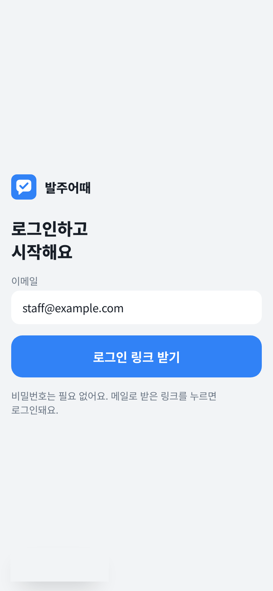
전표 찍기
한 장을 찍어 저장하기까지 보통 30초 안쪽이에요. AI가 읽은 내용을 한 번 확인해야 저장돼요.
1사진 찍고 올리기
홈에서 전표 촬영하기를 눌러요. 휴대폰은 사진 찍기로 카메라가 바로 열리고, 찍어 둔 사진이나 PDF는 사진이나 PDF 올리기로 골라요.
올리면 AI가 거래처, 날짜, 품목, 수량, 단가, 금액을 읽어요. 10~20초쯤 걸려요.
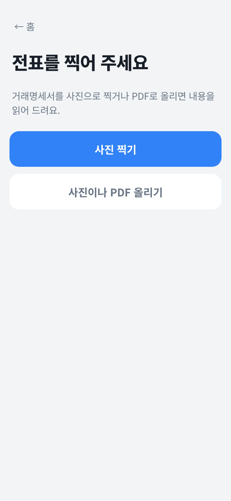
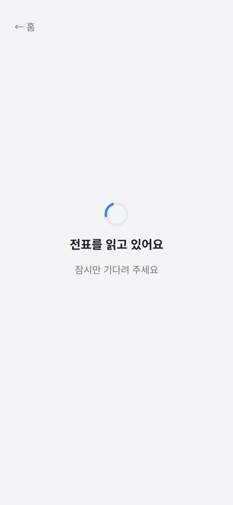
2읽은 내용 확인하기
위에는 올린 사진이, 아래에는 읽은 내용이 나와요. 사진을 누르면 크게 볼 수 있고, 틀린 칸은 눌러서 바로 고치면 돼요.
- 거래처(공급자): 물건을 보낸 곳
- 전표 날짜: 날짜가 없으면 저장한 날로 집계돼요
- 이 전표는: 우리가 산 것은 매입, 판 것은 매출. 매입만 합계에 들어가요
- 품목별 칸: 품목, 규격, 수량, 단가, 공급가액, 세액
- 전표 합계금액: 품목 합계와 다르면 차이를 알려 드려요
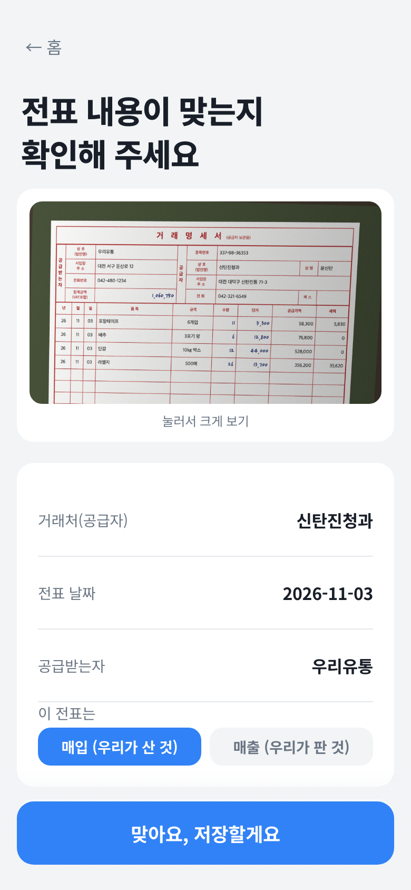
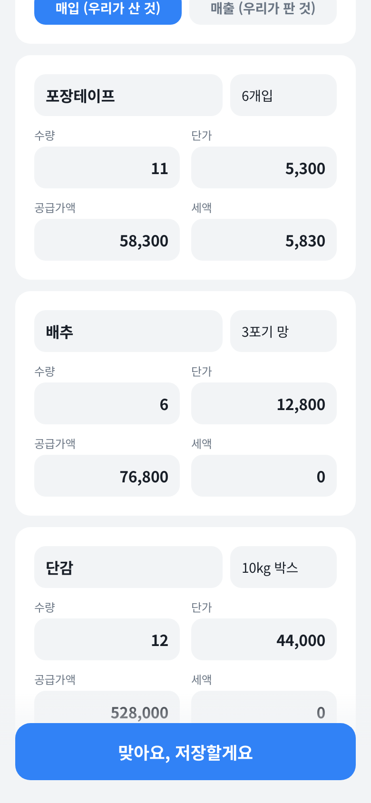
3노란 칸 확인하고 저장하기
처음 보는 품목이나 거래처, 계산이 맞지 않는 숫자는 노란색으로 표시되고 이유가 적혀 있어요. 사진과 비교해 맞으면 이대로 맞아요를, 틀리면 칸을 고친 뒤 이대로 맞아요를 눌러요.
노란 칸이 남아 있으면 아래 버튼이 "확인할 칸이 N건 남았어요"로 바뀌고 저장되지 않아요. 모두 확인하면 맞아요, 저장할게요로 저장해요.
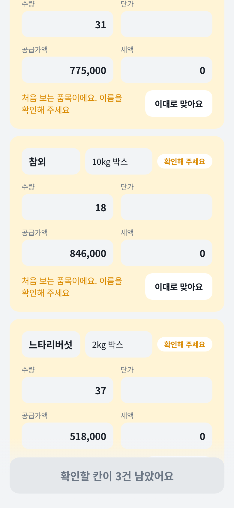
4들어온 수량을 재고에 더하기
매입 전표를 저장하면 "들어온 수량을 재고에 더할까요?"가 나오고, 품목마다 늘어날 수량(+11, +6…)이 보여요.
- 재고에 더하기: 재고 목록에 있는 품목은 수량이 늘고, 없던 품목은 새로 들어가요.
- 더하지 않기: 합계에만 들어가고 재고는 그대로예요. 이미 재고에 반영한 물건이거나 수량이 의심스러울 때 고르세요.
새로 들어간 품목은 필요한 양이 비어 있어서 발주 화면에 필요량 미설정으로 보여요. 이어서 찍을 전표가 있으면 다음 전표 찍기를 누르세요.
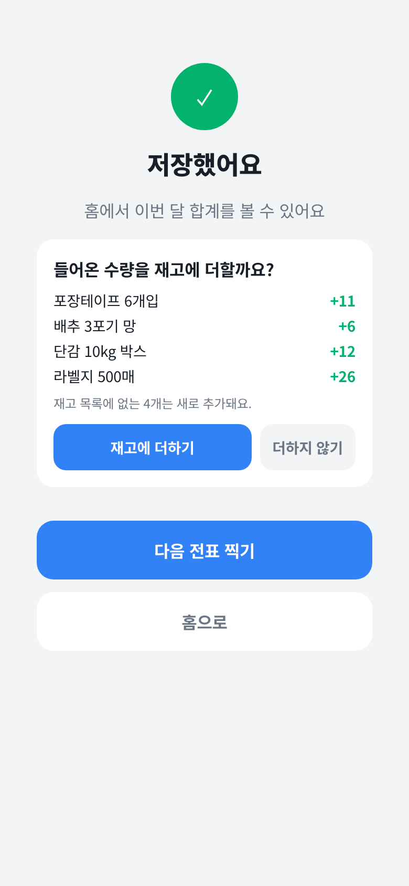
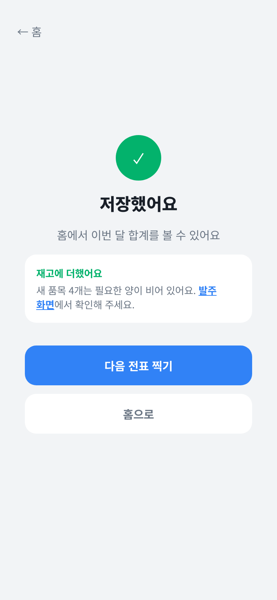
홈과 집계
저장한 전표는 바로 합계에 들어가요. 홈에서는 이번 달 합계를, 집계에서는 달별·거래처별 내역을 봐요.
- 달 고르기: 집계 화면 위쪽 달 버튼으로 볼 달을 바꿔요.
- 거래처별: 거래처마다 전표 수와 매입 합계가 큰 순서로 나와요.
- 이 달 전표: 전표마다 날짜와 금액이 나오고, 사진을 누르면 원본을 볼 수 있어요.
- 매입/매출 바꾸기: 전표 오른쪽 매입을 누르면 매출로 바뀌고 합계에서 빠져요. 다시 누르면 돌아와요.
- 엑셀로 내보내기: 첫 시트는 집계표, 이어서 전표마다 거래명세서 모양의 시트(공급받는자용·공급자용)가 들어가요.
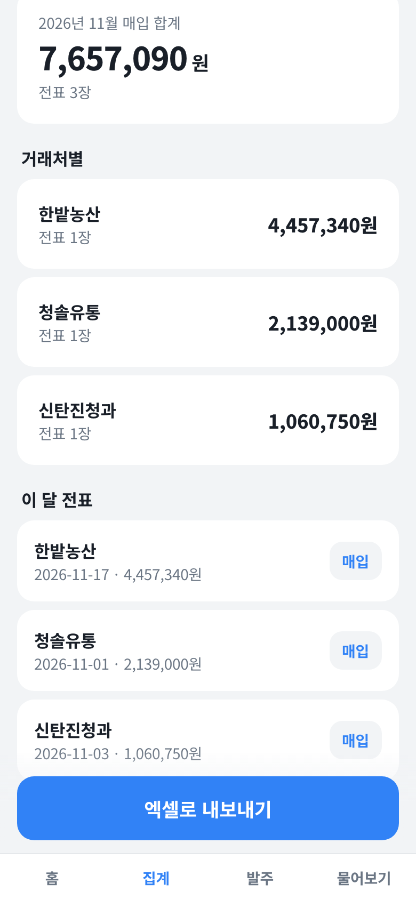
발주
매입 전표로 채워진 재고 목록에 품목별 필요한 양만 정해 두면, 부족한 만큼을 거래처별 발주서로 묶어 메일로 보낼 수 있어요.
1필요한 양 정하기
전표를 저장하며 재고에 더하기를 누른 품목은 이미 재고 목록에 들어와 있어요. 전표에 없는 품목은 품목 추가로 넣고, 예전에 저장한 전표의 품목은 전표에서 N개 가져오기로 한 번에 가져와요.
품목 줄에는 "현재 재고 / 필요한 양"이 나와요. 필요한 양을 아직 안 정한 품목은 필요량 미설정으로 보이고 발주 대상에서 빠져요. 줄을 눌러 필요한 양을 넣으면, 모자랄 때 빨간 숫자와 "N 부족"이 표시돼요.
| 칸 | 넣는 것 |
|---|---|
| 현재 재고 | 지금 가게에 있는 양 |
| 필요한 양 | 항상 두고 싶은 양. 부족분 = 필요한 양 − 현재 재고 |
| 단위 | 개, kg, 박스, 묶음 등 발주서에 적힐 단위 |
| 단가(원) | 예상 금액 계산에 쓰여요 |
| 거래처 | 같은 거래처 품목끼리 발주서 한 장으로 묶여요 |
| 거래처 이메일 | 발주 메일을 받을 주소 |
고친 내용은 바로 저장돼요. 아래쪽 발주하는 가게 이름을 한 번 넣어 두면 발주 메일 첫 줄에 들어가요.
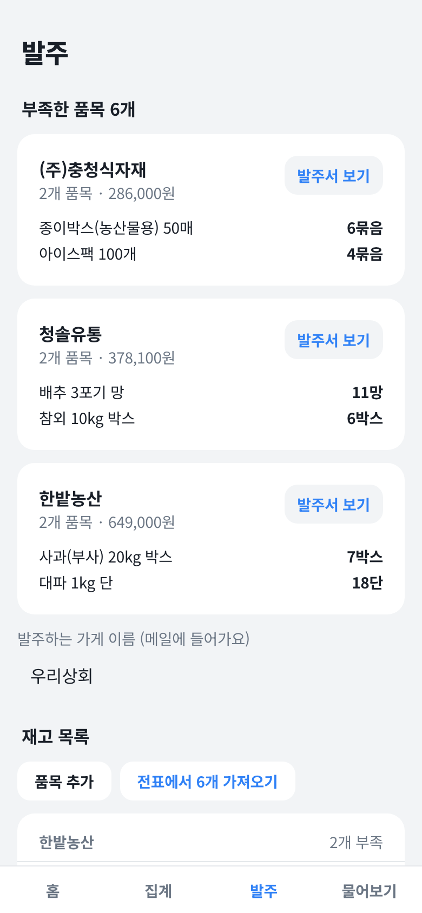
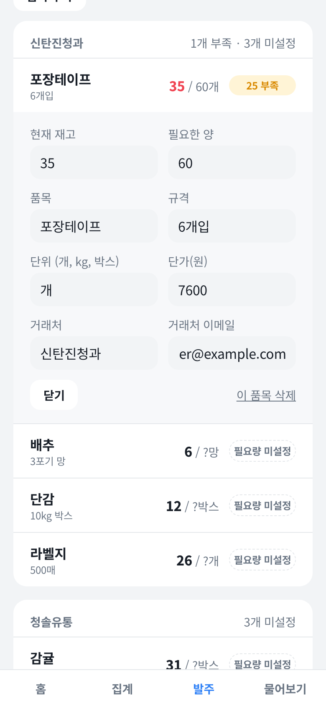
2발주서 확인하고 보내기
맨 위 부족한 품목에 거래처별 카드가 나와요. 발주서 보기를 누르면 받는 사람과 메일 내용이 보이고, 맞으면 이 내용으로 보내기를 눌러요.
- 메일은 발주어때 <order@eunseon.com> 이름으로 나가요.
- 보낸 뒤에는 버튼이 보냈어요로 바뀌어 같은 내용이 두 번 가지 않아요. 수량이나 내용을 바꾸면 다시 보낼 수 있어요.
- 거래처 이메일이 비어 있으면 보내기 버튼이 꺼져 있어요.
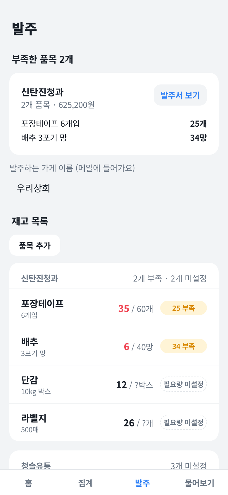
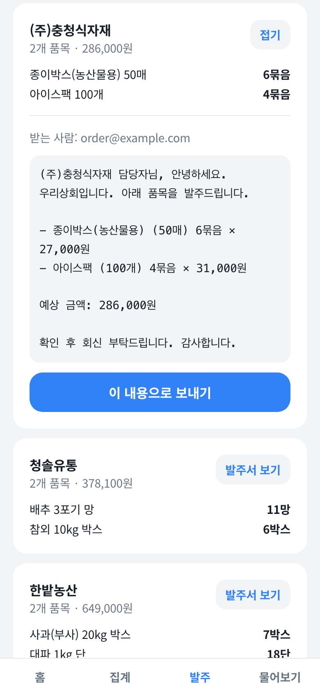
물어보기
저장한 전표와 재고에 대해 말로 물어보면 AI가 답해요. 합계와 부족분은 앱이 먼저 계산해 두고 AI는 그 숫자를 옮겨 적기만 해서, 계산이 틀리지 않아요.
처음 화면의 예시 질문을 누르거나, 아래 칸에 직접 적고 묻기를 눌러요.
- 이번 달 매입은 얼마야?
- 부족한 품목 알려줘
- 가장 많이 산 거래처는 어디야?
답 아래 근거 보기를 누르면 답에 쓰인 전표나 재고 품목이 나와요. 숫자가 이상하면 여기서 확인하세요.
저장하지 않은 내용은 모른다고 답해요. 최근 전표 150장까지 보고, 질문은 300자까지 적을 수 있어요.
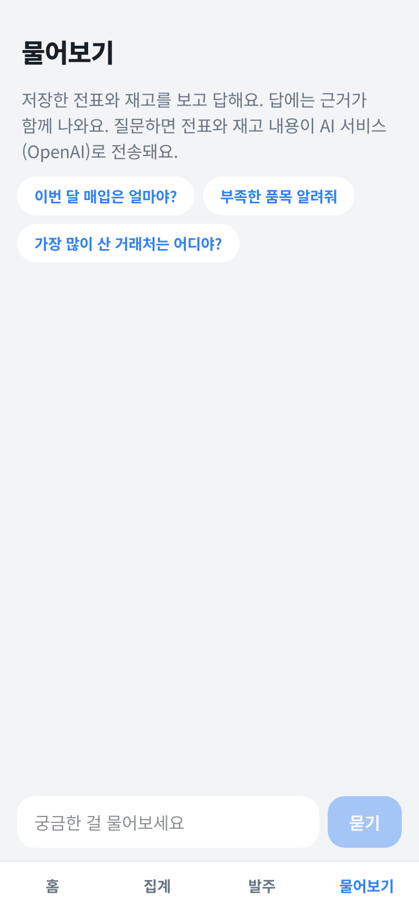
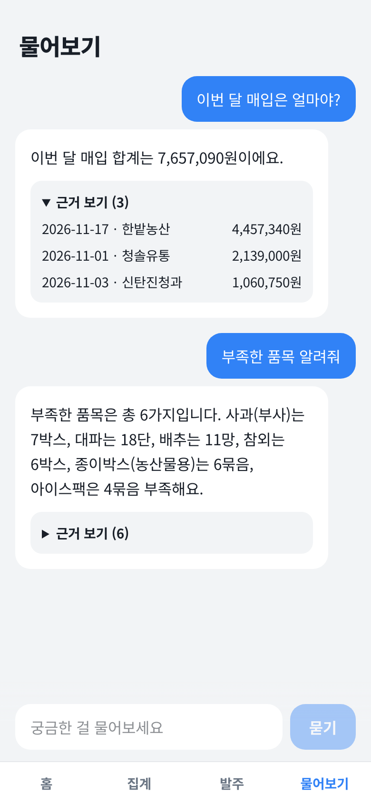
처음부터 끝까지 1분 30초
전표 세 장을 찍어 저장하고 재고에 더한 뒤, 집계를 보고, 필요한 양을 정해 발주서를 보내고, 물어보기까지 한 번에 보여 드려요. 예시 데이터로 찍었어요.
자주 묻는 것
재고에 더하기를 잘못 눌렀어요
발주 화면의 재고 목록에서 그 품목을 눌러 현재 재고 숫자를 고쳐 주세요. 고친 내용은 바로 저장돼요.
팔거나 쓴 만큼 재고가 줄어드나요?
자동으로 줄지는 않아요. 마감할 때 재고 목록에서 현재 재고를 실제 남은 양으로 고쳐 주세요.
매출 전표를 매입으로 저장했어요
집계 화면의 전표 목록에서 오른쪽 매입 버튼을 누르면 매출로 바뀌고 합계에서 빠져요. 내용 자체를 잘못 저장한 경우는 발주어때 담당자에게 알려 주세요.
단가 칸이 비어 있어요
전표에 단가가 없거나 흐리면 빈칸으로 나와요. 사진을 보고 채우거나, 공급가액만 맞으면 그대로 저장해도 합계는 맞아요.
인터넷이 끊기면 어떻게 되나요?
고친 내용은 기기에 잠깐 두었다가 다시 연결되면 서버에 올려요. 화면 위에 저장 안내가 보이면 연결을 확인해 주세요. 전표 읽기와 물어보기는 인터넷이 있어야 돼요.
거래처가 발주 메일에 답장하면 어디로 가나요?
order@eunseon.com은 보내기 전용이라 답장을 받지 못해요. 회신은 전화나 회사 메일로 받아 주세요.
한 전표에 매입과 매출이 섞여 있어요
전표 단위로만 구분돼요. 주된 쪽으로 저장해 주세요.
"아직 등록되지 않았어요"라고 나와요
회사 관리자가 그 이메일을 등록해야 쓸 수 있어요. 관리자에게 등록을 요청한 뒤, 로그인 링크를 새로 받아 주세요. 관리자는 홈 오른쪽 위 계정 등록에서 이메일을 등록하고, 처음 둘러볼 분께는 예시 데이터를 채워 줄 수 있어요.
로그인 메일이 오지 않아요
스팸함을 확인하고, 몇 분 뒤 다시 요청해 주세요. 너무 자주 요청하면 잠시 막힐 수 있어요.
비슷한 서비스와 비교하고, 2차에 넣을 기능
매입·발주를 돕는 서비스는 이미 여럿 있어요. 그 서비스들이 주로 하는 일과 발주어때가 다른 점을 정리하고, 그중 도매·식자재 유통에 꼭 필요한 기능을 2차에 넣으려고 해요.
| 분야 | 주로 하는 일 | 발주어때와 다른 점 |
|---|---|---|
| 유통사 발주 앱 | 점주가 유통사의 상품과 가격을 앱에서 보고 주문하고, 출고 상태를 확인해요. 결제·외상을 함께 다루기도 해요. | 유통사가 먼저 가입해 상품을 올려야 돌아가요. 발주어때는 거래처가 아무것도 가입하지 않아도 메일로 발주해요. |
| 회계·ERP + 전표 인식 | 받은 거래명세표를 인식해 회계·ERP에 입력해요. 세금계산서, 장부와 이어져요. | 장부 정리가 중심이라 재고와 다음 발주로 이어지지는 않아요. 발주어때는 매입 → 재고 → 발주가 한 흐름이에요. |
| 해외 외식업 원가 관리 | 전표를 사진·이메일·유통사 연동(EDI)으로 받아 재고, 레시피 원가, POS 매출과 묶어 마진을 보여 줘요. | 식당 메뉴 원가가 중심이고 매장당 월 구독료가 높은 편이에요. 발주어때는 한국 거래명세서 양식과 도매·유통 흐름에 맞췄어요. |
각 분야 대표 서비스의 공개 자료를 기준으로 정리했어요. 서비스마다 기능은 다를 수 있어요.
2차에 넣을 기능
- 1
단가 변동 알림
같은 품목이 지난번보다 비싸면 확인 화면에서 "지난번보다 8% 올랐어요"처럼 알려 줘요. 품목별 단가 그래프도 볼 수 있어요.
참고: 해외 원가 관리 서비스의 가격 추적·알림 - 2
입고 검수
보낸 발주서와 실제로 들어온 전표를 맞춰 "10박스 주문, 8박스 입고"처럼 차이를 보여 주고, 발주 이력 화면을 만들어요.
참고: 수발주 통합 서비스의 발주·입고 관리 - 3
이메일·메신저로 전표 받기
거래처가 메일로 보낸 PDF나 메신저로 받은 사진을 전용 주소로 넘기면 자동으로 읽어 확인 대기 목록에 올려요.
참고: 해외 서비스의 이메일 전표 수신 - 4
회사별 분리와 직원 권한
회사마다 데이터를 나누고, 관리자·직원 권한을 두어 같은 회사 직원끼리 전표와 재고를 함께 봐요. 지금의 관리자 등록제를 확장해요.
참고: 프랜차이즈·다매장 관리 서비스 - 5
자동 발주 추천
지난 매입과 재고 변화를 보고 "이번 주 배추 12망이 필요해요"처럼 필요한 양을 먼저 제안해요. 필요한 양을 직접 정하는 수고가 줄어요.
참고: 해외 서비스의 스마트 발주 - 6
회계 내보내기와 미지급 관리
회계 프로그램에 바로 올릴 수 있는 엑셀 양식으로 내보내고, 거래처별 미지급금과 결제 예정일을 표시해요.
참고: 회계·ERP 연동 서비스, 유통사 앱의 외상 관리 - 7
물어보기 2단계(조회형 TAG)
전표가 수천 장이 되어도 필요한 표만 조회해서 답해요. "작년 3월 배추 단가"처럼 오래된 내용도 물을 수 있어요. 구조는 기술 구성의 TAG 항목에 정리했어요.
발주어때 고유 기능의 확장
3차 이후 검토: 고객과 쓰임새에 따라 필요하면 넣을 기능이에요.
발주어때는 이렇게 만들어졌어요
여기부터는 도입 검토와 운영을 위한 기술 설명이에요. 서버 구성, 데이터가 흐르는 순서, 저장 구조, AI가 답을 만드는 방식을 정리했어요.
시스템 아키텍처
별도 서버를 직접 운영하지 않고, 검증된 클라우드 서비스 네 곳을 묶어 만들었어요. 화면과 API는 Vercel 서울 리전에서 돌고, 데이터는 Supabase에, AI는 OpenAI에, 메일 발송은 Resend에 맡겨요.
화살표는 요청이 가는 방향이에요. 모든 API는 Supabase 로그인 토큰을 확인한 뒤에만 동작해요.
데이터 흐름
전표 사진 한 장이 저장되고, 재고와 발주, 물어보기로 이어지는 순서예요. 사람이 확인하는 단계를 두 번 거쳐서 AI가 잘못 읽은 값이 그대로 쌓이지 않게 했어요.
flowchart TD P["전표 사진 · PDF"] --> E["AI 전표 읽기
gpt-4o · JSON 형식 고정"] E --> C["자동 검사
수량×단가 = 공급가액
품목 합계 = 전표 합계
처음 보는 거래처·품목"] C --> H1{"사람 확인 1
노란 칸 모두 확인?"} H1 -->|고치거나 맞다고 표시| H1 H1 -->|모두 확인| SV["전표 저장
invoices + 사진 보관함"] SV --> SUM["홈 · 집계
달별 · 거래처별 합계, 엑셀"] SV --> H2{"사람 확인 2
재고에 더할까요?"} H2 -->|더하기| STK["재고 반영
stock_items 수량 증가"] H2 -->|더하지 않기| SUM STK --> SH["부족분 계산
필요한 양 − 현재 재고"] SH --> ORD["거래처별 발주서"] ORD --> MAIL["발주 메일 발송
Resend · sent_orders 기록"] SV --> ASK["물어보기
집계표 + 근거 전표"] STK --> ASK
저장은 먼저 기기에 하고 곧바로 서버에 올려요. 인터넷이 끊기면 기기에 모아 두었다가 다시 연결될 때 올려요.
ERD
모든 데이터는 로그인한 사용자(auth.users)에 묶여요. 전표와 재고의 세부 내용은 jsonb 한 칸에 담아, 전표 양식이 바뀌어도 표 구조를 고치지 않고 받을 수 있게 했어요.
erDiagram
AUTH_USERS ||--o{ INVOICES : "저장"
AUTH_USERS ||--o{ STOCK_ITEMS : "관리"
AUTH_USERS ||--o{ SENT_ORDERS : "발송 기록"
AUTH_USERS ||--|| SETTINGS : "설정"
INVOICES ||--o| INVOICE_PHOTOS : "원본 사진"
AUTH_USERS {
uuid id PK
text email
}
INVOICES {
uuid user_id PK, FK
text id PK
jsonb data "전표 내용"
timestamptz updated_at
}
STOCK_ITEMS {
uuid user_id PK, FK
text id PK
jsonb data "품목 · 수량"
int position "화면 순서"
timestamptz updated_at
}
SENT_ORDERS {
uuid user_id PK, FK
text id PK "발주서 지문"
timestamptz sent_at
}
SETTINGS {
uuid user_id PK, FK
text buyer_name "우리 가게 이름"
timestamptz updated_at
}
INVOICE_PHOTOS {
text path PK "user_id/전표id.jpg"
text bucket "invoice-photos"
}
INVOICE_PHOTOS는 표가 아니라 Supabase Storage의 비공개 보관함이에요. 경로 첫 폴더가 사용자 id와 같을 때만 읽고 쓸 수 있어요.
테이블 명세
표 네 개와 사진 보관함 하나로 이루어져 있어요. 모든 표의 기본키는 (user_id, id)이고, 로그인하지 않은 요청에는 아무 권한도 없어요.
invoices저장한 전표
| 칸 | 형식 | 설명 |
|---|---|---|
| user_id | uuid · PK, FK | 저장한 사용자. 기본값 auth.uid() |
| id | text · PK | 전표 id |
| data | jsonb | 전표 전체(아래 data 구조) |
| updated_at | timestamptz | 마지막 저장 시각 |
invoices.data전표 JSON 구조
| 칸 | 형식 | 설명 |
|---|---|---|
| savedAt · fileName · imagePath | string | 저장 시각, 원본 파일 이름, 사진 보관함 경로 |
| invoice.docType | purchase | sales | unknown | 매입·매출 구분. 매출이 아니면 매입으로 집계 |
| invoice.supplierName · supplierBizNo | string | null | 공급자 상호, 사업자등록번호 |
| invoice.buyerName · issueDate | string | null | 공급받는자, 전표 날짜(YYYY-MM-DD) |
| invoice.totalAmount | number | null | 전표에 적힌 합계금액(VAT 포함) |
| invoice.items[] | array | name, spec, quantity, unitPrice, supplyAmount, tax, needsCheck, checkReason |
stock_items재고 품목
| 칸 | 형식 | 설명 |
|---|---|---|
| user_id · id | uuid · text · PK | 사용자와 품목 id |
| data | jsonb | name, spec, unit, stock(현재 재고), target(필요한 양), unitPrice, supplier, supplierEmail |
| position | integer | 화면에 보이는 순서 |
| updated_at | timestamptz | 마지막 저장 시각 |
sent_orders보낸 발주서 기록
| 칸 | 형식 | 설명 |
|---|---|---|
| user_id · id | uuid · text · PK | id는 받는 주소와 메일 내용으로 만든 지문. 같은 발주서를 두 번 보내지 않게 해요 |
| sent_at | timestamptz | 보낸 시각 |
settings사용자 설정
| 칸 | 형식 | 설명 |
|---|---|---|
| user_id | uuid · PK, FK | 사용자 |
| buyer_name | text | 우리 가게 이름. 매입·매출 판단과 발주 메일 첫 줄에 쓰여요 |
| updated_at | timestamptz | 마지막 저장 시각 |
storage: invoice-photos전표 원본 사진
| 항목 | 값 | 설명 |
|---|---|---|
| 공개 여부 | private | 10분짜리 서명 링크로만 열려요 |
| 경로 | {user_id}/{전표 id}.jpg | 첫 폴더가 본인 id일 때만 읽고 쓸 수 있어요 |
| 제한 | 10MB · jpg, png, webp, pdf | 사진은 올리기 전에 긴 변 1600px로 줄여요 |
AI 물어보기: TAG 방식
TAG(Table-Augmented Generation)는 AI가 기억이나 추측으로 답하지 않고, 데이터베이스에서 꺼낸 표를 근거로 답하게 하는 방식이에요. 발주어때는 "AI는 계산하지 않는다"를 원칙으로, 숫자는 코드가 계산하고 AI는 그 표를 읽어 문장으로 옮겨요.
집계표를 붙여 묻기
- 질문이 오면 서버가 로그인 토큰을 확인해요.
- 코드가 달별·거래처별 합계, 품목별 부족분을 미리 계산해요.
- 집계표와 최근 전표 150장, 재고 목록을 정해진 형식으로 AI에 넘겨요.
- AI는 답변과 근거로 쓴 전표·품목 id를 JSON으로 돌려줘요.
- 서버는 실제로 있는 id만 남겨 "근거 보기"로 보여 줘요.
데이터가 수백 장일 때 가장 단순하고 정확해요. 150장보다 오래된 전표의 세부 내용은 AI가 직접 보지 못해요.
필요한 표만 조회해서 묻기
- AI가 질문을 보고 필요한 조회를 고르고 조건을 채워요. 예: 기간 매입 합계(2026-03, 한밭농산)
- 서버가 미리 만들어 둔 안전한 조회 함수(Supabase RPC)만 실행해요. AI가 SQL을 직접 쓰지 않아요.
- 조회는 RLS 안에서 돌아서 우리 회사 데이터만 나와요.
- 조회 결과 표를 AI에 넘겨 답변과 근거 id를 받아요.
- 근거 id를 검증하고, 숫자가 결과 표와 다르면 다시 묻거나 표를 그대로 보여 줘요.
전표가 수만 장이어도 필요한 부분만 꺼내 쓰므로 빠르고, 기간·거래처·품목을 자유롭게 섞어 물을 수 있어요.
sequenceDiagram autonumber participant U as 사용자 participant API as 물어보기 API participant AI as OpenAI participant DB as Supabase RPC U->>API: 지난달 한밭농산 배추 단가 얼마였어? API->>AI: 질문 + 사용할 수 있는 조회 목록 AI-->>API: 조회 선택: 품목 단가 이력(배추, 한밭농산, 2026-10) API->>DB: 정해진 조회 함수 실행 (RLS · 우리 회사만) DB-->>API: 결과 표: 날짜 · 단가 · 전표 id API->>AI: 질문 + 결과 표 AI-->>API: 답변 + 근거 전표 id API->>API: 근거 id · 숫자 검증 API-->>U: 답변 + 근거 보기
다음 단계 구조의 흐름이에요. 준비할 조회 함수는 기간 매입 합계, 거래처별 순위, 품목 단가 이력, 재고 부족 목록, 전표 검색 다섯 가지부터 시작해요.